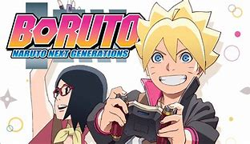

 1) Son of Naruto Uzumaki, Boruto, follows his father's footsteps along with his friends to become great ninja. Throughout all their adventures, Boruto is determined to make his mark in the ninja world and live outside of his father's shadow. 2) Naruto was a young shinobi with an incorrigible knack for mischief. He achieved his dream to become the greatest ninja in the village and his face sits atop the Hokage Monument. But this is not his story. A new generation of ninja are ready to take the stage, led by Naruto's own son Boruto. 3) Naruto has officially become Hokage, married Hinata Hyuga and has two children, Boruto Uzumaki and Himawari Uzumaki. Boruto, unlike his father, doesn't want to be a Hokage. Boruto only wants to be recognized by Naruto. Boruto will have to work hard with his teammates Sarada Uchiha, daughter of Sakura and Sasuke Uchiha, and Mitsuki they will be a new, improved, better generation of Shinobi.
One piece
One Piece is a Japanese manga series written and illustrated by Eiichiro Oda. It has been serialized in Shueisha's shōnen manga magazine Weekly Shōnen Jump since July 1997, with its individual chapters compiled into 103 tankōbon volumes as of August 2022. The story follows the adventures of Monkey D. Luffy, a boy whose body gained the properties of rubber after unintentionally eating a Devil Fruit. With his pirate crew, the Straw Hat Pirates, Luffy explores the Grand Line in search of the deceased King of the Pirates Gol D. Roger's ultimate treasure known as the "One Piece" in order to become the next King of the Pirates.
The manga spawned a media franchise, having been adapted into a festival film produced by Production I.G, and an anime series produced by Toei Animation, which began broadcasting in Japan in 1999.
.jpg)